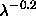

Next: Resolving Multiple Detections
Up: Software
Previous: Assessment of Photometric Calibration
The quality of each field of data from the 2.5-meter imaging camera is
assessed based on a number of criteria. A quality is assigned for
each criterion, and an overall quality is assigned based on the worst
value of these.
The possible values for quality in the class
Field (Table 16) are:
- AR_DQ_GOOD: Data meet requirements
- AR_DQ_ACCEPTABLE: Data do not meet requirements but are usable
for target selection; replace with new data if time permits.
- AR_DQ_HOLE: Data do not meet requirements; the area of sky is small
enough to not warrant replacing with new data.
- AR_DQ_BAD: Data do not meet requirements.
- AR_DQ_MISSING: Data are missing; the area of sky is small enough
to not warrant obtaining new data.
For the EDR, all fields are in one of the first three categories. The
quality for each field is indicated in Figure 8.
A set of flags is maintained for each field in which the quality for
each of the criteria is recorded. These flags are 32-bit masks; there
are 4 masks, one each for GOOD, ACCEPTABLE, HOLE,
and BAD, with bits assigned for each criterion used to judge
quality. For example, if the seeing is judged acceptable, then the
bit assigned to seeing in the ``acceptable'' mask is set.
Additionally, an overall quality is stored separately.
The following are the criteria used to assess data quality:
- PSF (Seeing): The median point-spread function (PSF)
full-width at half maximum (FWHM) over all 30 (photometric) CCDs must
be less than 1.5 arcsec for GOOD data. Because seeing is a
function of wavelength, all measures of FWHM are corrected to the
value that would be measured in the r band by scaling as
. The actual algorithm also smoothes over time, so the
quality of a field depends on more than just the instantaneous seeing.
If the seeing fluctuates rapidly from field to field, quality is
set to AR_DQ_HOLE. Additionally, for fields where the FWHM is greater
than 1.5 arcsec and the largest FWHM for any CCD is less than
1.8 arcsec, the quality is AR_DQ_ACCEPTABLE.
- Tracking: The telescope must track to within 8 arcsec in the
direction perpendicular to nominal path for GOOD data and 18 arcsec for
ACCEPTABLE data. This is necessary to not leave gaps between
adjacent scanlines.
- PSF Model: The postage stamp pipeline (§ 4.3)
outputs a status flag that indicates how accurately it was able to model the
variable PSF in a field. This flag is converted to a quality of GOOD,
ACCEPTABLE, or HOLE.
- Timeout:
For some fields, the frames pipeline
requires an inordinate amount of time to process, particularly if there are
complex objects such as star clusters. In such cases the pipeline processing
times out and no object file is created. For such fields a HOLE is
created.
- Photometric: Data must meet certain conditions on photometry.
At present this quality assignment is not automated due to the complexity
involved in creating a robust test. Non-photometric data are excised by hand.
- Manual: In some cases it is desirable to override the overall
automated QA assignment.
The parameter badMask in Table 16 encodes
reasons why data were not declared GOOD.
The SKY and AMP bits are not used for the EDR.
They are used to mask imaging data because of high sky values or bad
amplifier noise, respectively.
A substantial portion of fields in the EDR have had quality
set manually, overriding the PSF or tracking quality in most cases. A list of
all fields that have had the quality overridden are listed in
Table 25. They have the AR_FQ_MANUAL flag bit set.
Next: Resolving Multiple Detections
Up: Software
Previous: Assessment of Photometric Calibration
Michael Strauss
Thu Jan 30 11:15:34 EST 2003